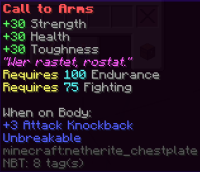

Aurelium Skills
Skills, stats, & abilities
Skills can be leveled up with a specific action. For example, the mining skill, that can be leveled up by mining.
Stats grant you buffs such as extra HP. Stats can be leveled up by leveling up specific skills. For example, the Health stat can be leveled up with Farming and Alchemy. It can also be leveled up with Fishing, Defense, and Healing, although to a lesser extent than Farming and Alchemy.
Abilities come in two flavours: passive and active (also known as 'mana abilities'). Passive abilities are always active and don't need to be activated. Active abilities must be activated by shift-right-clicking with the relevant tool, then making the relevant action. For example, the 'Speed Mine' ability can be used by right-clicking with a pickaxe in hand, then breaking a block.
Custom Items
Aurelium Skills allows us to add custom items that can modify your XP gain, and buff/nerf certain stats. These items can be acquired through excavation, fishing, foraging, and mining, although they are very rare. These items may also require specific skill levels to use. For example, the item below needs at least Endurance 100 and Fighting 75.
